!wget https://raw.githubusercontent.com/XeroX-cat/1Laba/main/Макаки.xlsx
--2026-11-13 20:46:29-- https://raw.githubusercontent.com/XeroX-cat/1Laba/main/%D0%9C%D0%B0%D0%BA%D0%B0%D0%BA%D0%B8.xlsx
Resolving raw.githubusercontent.com (raw.githubusercontent.com)... 185.199.108.133, 185.199.109.133, 185.199.110.133, ...
Connecting to raw.githubusercontent.com (raw.githubusercontent.com)|185.199.108.133|:443... connected.
HTTP request sent, awaiting response... 200 OK
Length: 43969 (43K) [application/octet-stream]
Saving to: ‘Макаки.xlsx’
Макаки.xlsx 100%[===================>] 42.94K --.-KB/s in 0.005s
2026-11-13 20:46:29 (9.30 MB/s) - ‘Макаки.xlsx’ saved [43969/43969]
Случайные величины
в морфометрии макак
Индекс разделов#
Dataset preparation
Подключение библиотек и загрузка датасета: https://pmc.ncbi.nlm.nih.gov/articles/PMC3403949/?utm_source=chatgpt.com#sec25
| Specimen | Sex | Chinese Ancestry | kg | C-R curved | R humeral max | R femoral max | R Radial max | R tibial max | Note | |
|---|---|---|---|---|---|---|---|---|---|---|
| 0 | 29999 | F | 0.250 | 9.30 | 507.1 | 153.17 | 181.65 | 155.01 | 166.04 | NaN |
| 1 | 30797 | F | 0.125 | 8.49 | 531.6 | 156.21 | 179.04 | 154.70 | 166.48 | NaN |
| 2 | 31603 | F | 0.750 | 7.35 | 514.4 | 152.38 | 174.42 | 139.60 | 155.81 | NaN |
| 3 | 31692 | F | 0.750 | 7.70 | 531.7 | 147.33 | 165.06 | 144.37 | 152.57 | NaN |
| 4 | 32200 | F | 0.130 | 8.50 | 531.6 | 150.25 | 173.47 | 148.20 | 156.72 | NaN |
Вывод первых нескольких строк (проверка)
<class 'pandas.core.frame.DataFrame'>
RangeIndex: 134 entries, 0 to 133
Data columns (total 10 columns):
# Column Non-Null Count Dtype
--- ------ -------------- -----
0 Specimen 134 non-null int64
1 Sex 134 non-null object
2 Chinese Ancestry 134 non-null float64
3 kg 134 non-null float64
4 C-R curved 134 non-null float64
5 R humeral max 134 non-null float64
6 R femoral max 134 non-null float64
7 R Radial max 134 non-null float64
8 R tibial max 134 non-null float64
9 Note 2 non-null object
dtypes: float64(7), int64(1), object(2)
memory usage: 10.6+ KB
Просмотр таблицы, что была до отсева ненужной части данных
| 0 | |
|---|---|
| Sex | 0 |
| Chinese Ancestry | 0 |
| kg | 0 |
| C-R curved | 0 |
| R humeral max | 0 |
| R femoral max | 0 |
Создание таблицы только с тремя величинами, подсчёт строк с отсутствующими данными
Всего строк: 134
Строк со всеми тремя измерениями: 134
Строк хотя бы с одним пропуском: 0
Создание таблицы только со строками с полными данными
Самцов: 42
Самок: 92
General description (природа событий)
Из 134 строки с полными данными равновероятно выбирается одна строка о конкретном животном. Животное не выбрано, пока не выбрана строка с данными. Каждой строке соответствуют фиксированные, конкретные значения массы тела, длины тела, плечевой и бедренной кости. 134 строки - это генеральная совокупность.
При равновероятном выборе строки величины массы тела и три длины имеют дискретное распределние с конечных числом возможных значений. До случайного выбора животного неизвестно, какое значение примет (X).
Выборка с возвращением и без возвращения#
Из генеральной совокупности выбирается выборка размером n.
При отборе с возвращением: после взятия животного в выборку, оно остаётся доступным, чтобы вязть его снова. То есть конкретное данное животное в выборке может встретиться несколько раз. Выбор животного остаётся одинаковым для каждого животного. Число животных в выборке может быть больше, чем число животных в генерельной совокупности.
При отборе без возвращения: после взятия животного в выборку, оно становится недоступным, чтобы взять его снова. То есть любое животное в выборке может встретиться только один раз. Число животных в выборке не может быть больше, чем число животных в генерельной совокупности.
Среднее генеральной совокупности и её дисперсия: $\( \mu=\frac{1}{N}\sum_{j=1}^{N}x_j, \qquad \sigma^2=\frac{1}{N}\sum_{j=1}^{N}(x_j-\mu)^2. \)\( Выборочное среднее: \)\( \bar X=\frac{1}{n}\sum_{i=1}^{n}X_i \)$
Дисперсии выборок различаются: $\( \sigma_{\bar X,\;\text{с возвращением}}^{2} =\frac{\sigma^2}{n} \)$
Random Variable Mass
Description (природа события)#
Случайная величина (X) - масса тела животного в выбранной строке с единицей измерения [кг]. Только после выбора строки можно узнать массу, то есть величина заранее не известна. Но каждой конкретной строке соответствует одна масса. Это соответствует определению случайной величины у Н.Ш.Кремера (стр.89-90).
EDA & Distribution#
До случайного выбора животного неизвестно, какое значение примет (X).
Была построена гистограмма распределения масс животных.#
Распределение в исходной гистограмме масс животных визуально не является нормальным, поэтому массы были прологарифмированы (взят десятичный логарифм). Распределение на логарифмируемом графике визуально похоже на нормальное. Сделано предположение, что распределение логнормальное.
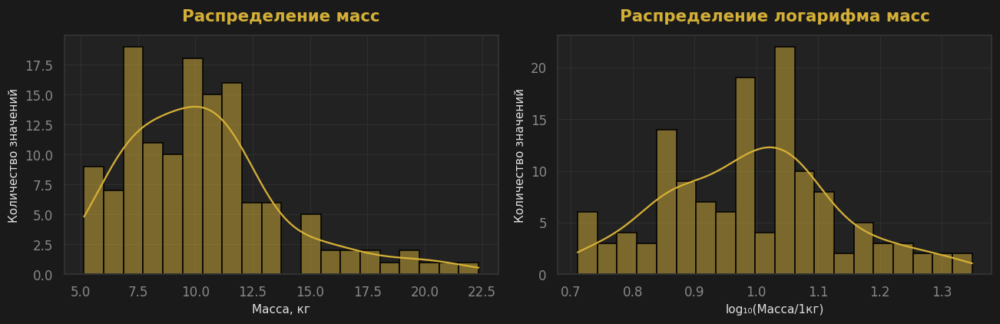
Подтвержение нормального распределения логарифма масс с помощью Q-Q-графика. (Подтверждение логнормального распределения.)
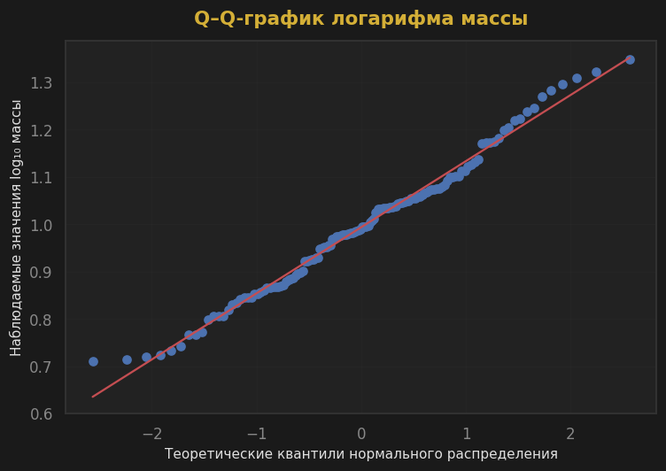
Создание таблицы: какая масса и сколько раз встретилась, доли этих масс, вероятность события P(X <= x) и проверка (не 1 из-за машинной точности).#
Количество масс: 134
Количество уникальных масс: 128
Сумма относительных частот: 0.9999999999999997
| mass_kg | count | p_i | P | |
|---|---|---|---|---|
| 0 | 5.14 | 1 | 0.007463 | 0.007463 |
| 1 | 5.18 | 1 | 0.007463 | 0.014925 |
| 2 | 5.24 | 1 | 0.007463 | 0.022388 |
| 3 | 5.30 | 1 | 0.007463 | 0.029851 |
| 4 | 5.40 | 1 | 0.007463 | 0.037313 |
| ... | ... | ... | ... | ... |
| 123 | 19.20 | 1 | 0.007463 | 0.970149 |
| 124 | 19.76 | 1 | 0.007463 | 0.977612 |
| 125 | 20.40 | 1 | 0.007463 | 0.985075 |
| 126 | 20.97 | 1 | 0.007463 | 0.992537 |
| 127 | 22.35 | 1 | 0.007463 | 1.000000 |
128 rows × 4 columns
Построение графиков функции распределения массы#
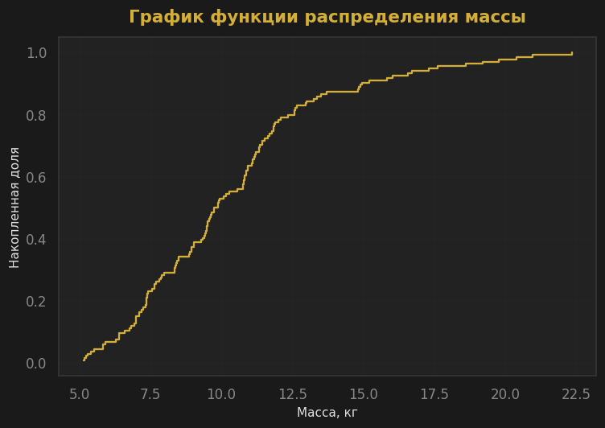
Вычисление разных статистик масс (математического ожидания, среднего, дисперсии, стандратного отклонения, моды и тд)#
Мат. ожидание по таблице частот, кг: 10.38
Количество масс: 134.00
Сумма масс, кг: 1390.65
Средняя масса, кг: 10.38
Медиана массы, кг: 9.82
Минимальная масса, кг: 5.14
Максимальная масса, кг: 22.35
Cтандартное отклонение, кг: 3.47
Первый квартиль (25%), кг: 7.67
Третий квартиль (75%), кг: 11.82
95-й перцентиль, кг: 17.41
Дисперсия, кг²: 12.07
Стандартное отклонение, кг: 3.47
Мода, кг: [7.0]
Число повторений каждой моды: 3
Минимум: 0.0
Максимум: 1.0
Independence & Estimations#
Средняя масса в генеральной совокупности составляет 10,38 кг. В выборке с возвращением она равна 10.09 кг — завышение на 2.74%, а без возвращения — 9.78 кг, занижение на 5.76%. Медиана в выборке с возвращением (9.43 кг) была ближе к медиане и генеральной выборки (9.82 кг), чем медиана без возвращения (9.42 кг). Стандартное отклонение без возвращения (3.15 кг) было ближе к стандартному отклонению генеральной выборки (3.47 кг), чем стандартное отклонение с возвращением (3.14 кг).
Масса тела зависит от пола: самцы тяжелее самок на 4.7 кг или на 52.83%.
Состоятельность оценки#
134 масса - это генеральная совокупность. Её средняя масса известна и используется как контроль. Берём данные из генеральной выборки, получаем выборки с возвращением с разным количеством масс. Для каждой новой выборки повторяем исследование 1000 раз, вычисляя выборочное среднее. Проверяем, уменьшается ли с ростом объёма выборки ошибка оценки среднего (RMSE).
Средняя масса генеральной совокупности: 10.38 кг
| Размер выборки | Среднее оценок, кг | RMSE, кг | Нижняя граница 95% оценок, кг | Верхняя граница 95% оценок, кг | |
|---|---|---|---|---|---|
| 0 | 10 | 10.357613 | 1.110478 | 8.405925 | 12.737175 |
| 1 | 30 | 10.347124 | 0.631364 | 9.202400 | 11.657517 |
| 2 | 100 | 10.359417 | 0.355113 | 9.675387 | 11.064650 |
| 3 | 300 | 10.391260 | 0.207961 | 9.998503 | 10.811438 |
| 4 | 1000 | 10.376276 | 0.107659 | 10.172362 | 10.596813 |
| 5 | 3000 | 10.373561 | 0.060731 | 10.257732 | 10.497122 |
Ошибка оценки среднего от размера выборки#
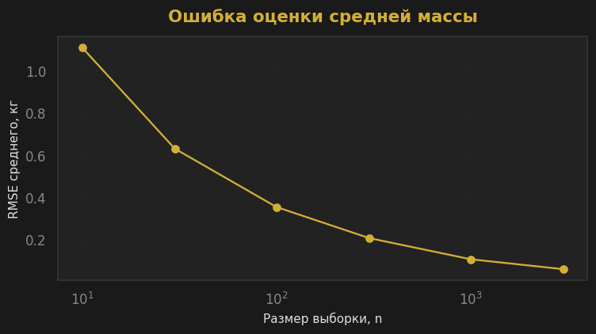
Вычисление разных статистик масс тел в выборке с возвращением#
Количество: 50
Среднее, кг: 10.09
Медиана, кг: 9.43
Минимум, кг: 5.14
Максимум, кг: 22.35
Стандартное отклонение, кг: 3.14
Первый квартиль, кг: 8.37
Третий квартиль, кг: 11.74
95-й перцентиль, кг: 15.39
Вычисление разных статистик масс тел в выборке без возвращения#
Количество: 50
Среднее, кг: 9.78
Медиана, кг: 9.41
Минимум, кг: 5.24
Максимум, кг: 22.35
Стандартное отклонение, кг: 3.15
Первый квартиль, кг: 7.52
Третий квартиль, кг: 11.13
95-й перцентиль, кг: 15.37
Вычисление разных статистик масс тел в выборке самцов#
Количество: 42
Среднее, кг: 13.61
Медиана, кг: 12.29
Минимум, кг: 8.96
Максимум, кг: 22.35
Стандартное отклонение, кг: 3.50
Первый квартиль, кг: 11.00
Третий квартиль, кг: 15.75
95-й перцентиль, кг: 20.37
Вычисление разных статистик масс тел в выборке самок#
Количество: 92
Среднее, кг: 8.90
Медиана, кг: 8.68
Минимум, кг: 5.14
Максимум, кг: 15.83
Стандартное отклонение, кг: 2.25
Первый квартиль, кг: 7.25
Третий квартиль, кг: 10.76
95-й перцентиль, кг: 12.61
Сравнение средних генеральной совокупности, выборки с и без возвращения#
Среднее генеральной совокупности, кг: 10.38
Среднее выборки с возвращением, кг: 10.09
Среднее выборки без возвращения, кг: 9.78
Ошибка среднего с возвращением, %: 2.74
Ошибка среднего без возвращения, %: 5.76
Сравнение средней массы тела самок и самцов#
Среднее всей совокупности, кг: 10.38
Среднее самцов, кг: 13.61
Среднее самок, кг: 8.90
Разность средних «самцы − самки», кг: 4.70
Средняя масса тела самцов выше средней массы тела самок на 52.83%
Random Variable Body Lenght
Description (природа события)#
Случайная величина (Y) - длина тела животного в выбранной строке с единицей измерения [мм]. Только после выбора строки можно узнать длину тела, то есть величина заранее не известна. Но каждой конкретной строке соответствует одна длина. Это соответствует определению случайной величины у Н.Ш.Кремера (стр.89-90).
EDA & Distribution#
До случайного выбора животного неизвестно, какое значение примет (Y).
Была построена гистограмма распределения длин плечевых костей животных.#
Распределение в исходной гистограмме длин тел животных визуально не является нормальным, поэтому длины были прологарифмированы (взят десятичный логарифм). Распределение на логарифмируемом графике визуально не похоже на нормальное. Сделано предположение, что это распределение Фишера.
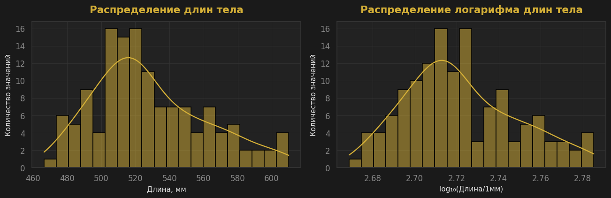
Подтвержение распределения длин тел по Фишеру с помощью Q-Q-графика.
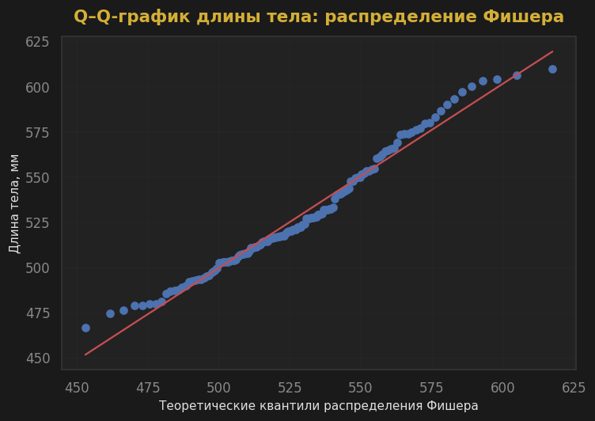
Создание таблицы: какая длина тела и сколько раз встретилась, доли этих длин, вероятность события P(Y <= y) и проверка (не 1 из-за машинной точности).#
Количество длин тела: 134
Количество уникальных длин тела: 128
Сумма относительных частот: 0.9999999999999997
| b_length_mm | count | p_i | P | |
|---|---|---|---|---|
| 0 | 466.5 | 1 | 0.007463 | 0.007463 |
| 1 | 474.3 | 1 | 0.007463 | 0.014925 |
| 2 | 476.0 | 1 | 0.007463 | 0.022388 |
| 3 | 478.8 | 2 | 0.014925 | 0.037313 |
| 4 | 479.6 | 1 | 0.007463 | 0.044776 |
| ... | ... | ... | ... | ... |
| 123 | 600.0 | 1 | 0.007463 | 0.970149 |
| 124 | 603.1 | 1 | 0.007463 | 0.977612 |
| 125 | 604.0 | 1 | 0.007463 | 0.985075 |
| 126 | 606.3 | 1 | 0.007463 | 0.992537 |
| 127 | 609.9 | 1 | 0.007463 | 1.000000 |
128 rows × 4 columns
Построение графиков функции распределения длины тел#
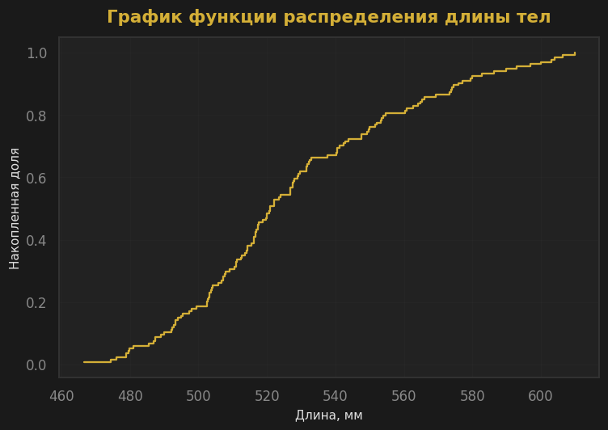
Вычисление разных статистик длин тел (математического ожидания, среднего, дисперсии, стандратного отклонения, моды и тд)#
Мат. ожидание по таблице частот, мм: 528.11
Количество длин тел: 134.00
Сумма длин тел, мм: 70766.60
Средняя длина тел, мм: 528.11
Медиана длин тел, мм: 520.80
Минимальная длина тел, мм: 466.50
Максимальная длина тел, мм: 609.90
Cтандартное отклонение, мм: 32.43
Первый квартиль (25%), мм: 504.55
Третий квартиль (75%), мм: 549.67
95-й перцентиль, мм: 590.88
Дисперсия, мм²: 1,051.61
Стандартное отклонение, мм: 32.43
Мода, мм: [478.8, 502.4, 520.8, 522.1, 526.8, 531.6]
Число повторений каждой моды: 2
Independence & Estimations#
Средняя длина тела в генеральной совокупности составляет 528.11 мм. В выборке с возвращением она равна 531.46 мм — завышение на 0.64%, а без возвращения — 523.53 мм, занижение на 0.87%. Медиана в выборке с возвращением (518.75 мм) была ближе к медиане и генеральной выборки (520.80 мм), чем медиана без возвращения (518.0 мм). Стандартное отклонение с возвращения (32.52 мм) было ближе к стандартному отклонению генеральной выборки (32.43 мм), чем стандартное отклонение без возвращением (30.57 мм).
Длина тела зависит от пола: самцы длинее самок на 47.72 мм или на 9.3%.
Состоятельность оценки#
Средняя длина тела в генеральной совокупности: 528.11 мм
| Размер выборки | Среднее оценок, мм | RMSE, мм | Нижняя граница 95% оценок, мм | Верхняя граница 95% оценок, мм | |
|---|---|---|---|---|---|
| 0 | 10 | 528.486300 | 9.522300 | 512.620000 | 547.714000 |
| 1 | 30 | 527.863400 | 6.009465 | 517.958417 | 538.906333 |
| 2 | 100 | 527.428190 | 3.269179 | 521.371325 | 534.238525 |
| 3 | 300 | 528.173167 | 1.824406 | 525.061217 | 531.910658 |
| 4 | 1000 | 528.060596 | 1.239806 | 525.364230 | 530.738010 |
| 5 | 3000 | 528.177056 | 0.574058 | 527.118806 | 529.282688 |
Ошибка оценки среднего от размера выборки#
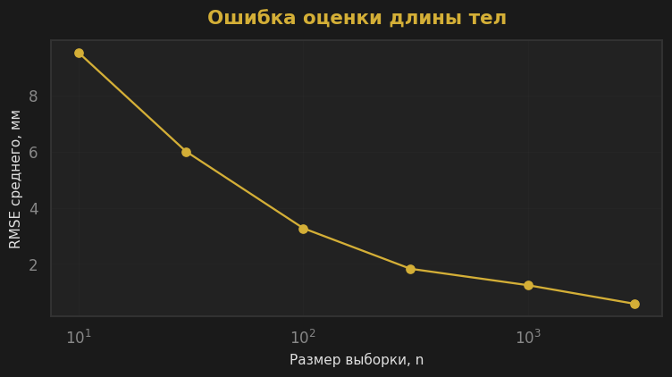
Вычисление разных статистик длин тел в выборке с возвращением#
Количество: 50
Среднее, мм: 531.46
Медиана, мм: 518.75
Минимум, мм: 479.80
Максимум, мм: 609.90
Стандартное отклонение, мм: 32.52
Первый квартиль, мм: 508.67
Третий квартиль, мм: 559.33
95-й перцентиль, мм: 591.50
Вычисление разных статистик длин тел в выборке без возвращения#
Количество: 50
Среднее, мм: 523.53
Медиана, мм: 518.00
Минимум, мм: 466.50
Максимум, мм: 606.30
Стандартное отклонение, мм: 30.57
Первый квартиль, мм: 502.88
Третий квартиль, мм: 536.35
95-й перцентиль, мм: 592.26
Вычисление разных статистик длин тел в выборке самцов#
Количество: 42
Среднее, мм: 560.87
Медиана, мм: 563.30
Минимум, мм: 511.00
Максимум, мм: 609.90
Стандартное отклонение, мм: 27.64
Первый квартиль, мм: 541.23
Третий квартиль, мм: 579.17
95-й перцентиль, мм: 603.96
Вычисление разных статистик длин тел в выборке самок#
Количество: 92
Среднее, мм: 513.15
Медиана, мм: 514.00
Минимум, мм: 466.50
Максимум, мм: 579.40
Стандартное отклонение, мм: 21.66
Первый квартиль, мм: 497.88
Третий квартиль, мм: 526.82
95-й перцентиль, мм: 549.52
Сравнение средних генеральной совокупности, выборки с и без возвращения#
Среднее генеральной совокупности, мм: 528.11
Среднее выборки с возвращением, мм: 531.46
Среднее выборки без возвращения, мм: 523.53
Ошибка среднего с возвращением, %: 0.64
Ошибка среднего без возвращения, %: 0.87
Сравнение средней длины тела самок и самцов#
Среднее всей совокупности, мм: 528.11
Среднее самцов, мм: 560.87
Среднее самок, мм: 513.15
Разность средних «самцы − самки», мм: 47.72
Средняя длина самцов выше средней длины самок на 9.30%
Random Variable Humerus Length
Description (природа события)#
Случайная величина (Z) - длина плечевой кости животного в выбранной строке с единицей измерения [мм]. Только после выбора строки можно узнать длину плечевой кости, то есть величина заранее не известна. Но каждой конкретной строке соответствует одна длина. Это соответствует определению случайной величины у Н.Ш.Кремера (стр.89-90).
EDA & Distribution#
До случайного выбора животного неизвестно, какое значение примет (Z).
Была построена гистограмма распределения длин плечевых костей животных.#
Распределение в исходной гистограмме длин плечевых костей животных визуально не является нормальным, поэтому длины были прологарифмированы (взят десятичный логарифм). Распределение на логарифмируемом графике визуально не похоже на нормальное. Сделано предположение, что это распределение Фишера.
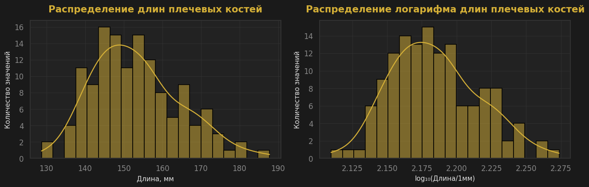
Подтвержение распределения длин плечевых костей по Фишеру с помощью Q-Q-графика.
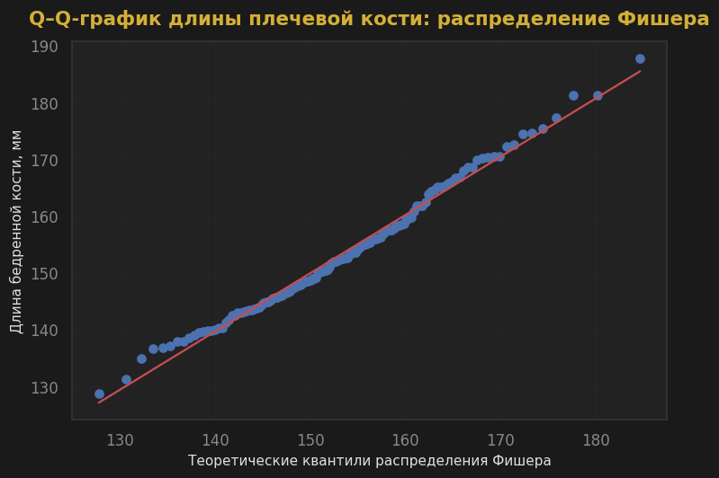
Создание таблицы: какая длина плечевой кости и сколько раз встретилась, доли этих длин, вероятность события P(Z <= z) и проверка.#
Количество длин плечевых костей: 134
Количество уникальных длин плечевых костей: 132
Сумма относительных частот: 1.0
| h_length_mm | count | p_i | P | |
|---|---|---|---|---|
| 0 | 128.74 | 1 | 0.007463 | 0.007463 |
| 1 | 131.30 | 1 | 0.007463 | 0.014925 |
| 2 | 134.94 | 1 | 0.007463 | 0.022388 |
| 3 | 136.61 | 1 | 0.007463 | 0.029851 |
| 4 | 136.83 | 1 | 0.007463 | 0.037313 |
| ... | ... | ... | ... | ... |
| 127 | 175.45 | 1 | 0.007463 | 0.970149 |
| 128 | 177.33 | 1 | 0.007463 | 0.977612 |
| 129 | 181.34 | 1 | 0.007463 | 0.985075 |
| 130 | 181.37 | 1 | 0.007463 | 0.992537 |
| 131 | 187.77 | 1 | 0.007463 | 1.000000 |
132 rows × 4 columns
Построение графиков функции распределения длины плечевых костей#
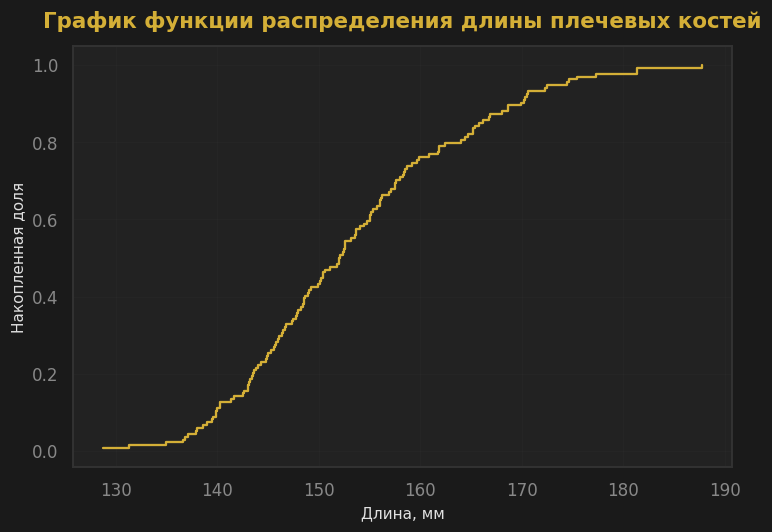
Вычисление разных статистик длин плечевых костей (математического ожидания, среднего, дисперсии, стандратного отклонения, моды и тд)#
Мат. ожидание по таблице частот, мм: 153.28
Количество длин плечевых костей: 134.00
Сумма длин плечевых костей, мм: 20539.77
Средняя длина плечевых костей, мм: 153.28
Медиана длин плечевых костей, мм: 152.06
Минимальная длина плечевых костей, мм: 128.74
Максимальная длина плечевых костей, мм: 187.77
Cтандартное отклонение, мм: 11.20
Первый квартиль (25%), мм: 145.03
Третий квартиль (75%), мм: 159.55
95-й перцентиль, мм: 173.21
Дисперсия, мм²: 125.50
Стандартное отклонение, мм: 11.20
Мода, мм: [140.26, 168.63]
Число повторений каждой моды: 2
Independence & Estimations#
Средняя длина плечевой кости в генеральной совокупности составляет 153.28 мм. В выборке с возвращением она равна 154.21 мм — завышение на 0.60%, а без возвращения — 151.67 мм, занижение на 1.05%. Медиана в выборке с возвращением (153.07 мм) была ближе к медиане и генеральной выборки (152.06 мм), чем медиана без возвращения (152.25 мм). Стандартное отклонение с возвращения (11.78 мм) было ближе к стандартному отклонению генеральной выборки (11.20 мм), чем стандартное отклонение без возвращением (10.05 мм).
Длина плечевых костей зависит от пола: кости самцов длинее самок на 19.04 мм или на 12.93%.
Состоятельность оценки#
Средняя длина плечевой кости в генеральной совокупности: 153.28 мм
| Размер выборки | Среднее оценок, мм | RMSE, мм | Нижняя граница 95% оценок, мм | Верхняя граница 95% оценок, мм | |
|---|---|---|---|---|---|
| 0 | 10 | 153.565290 | 3.349257 | 148.197475 | 160.676275 |
| 1 | 30 | 153.243443 | 2.181353 | 148.797675 | 156.862083 |
| 2 | 100 | 153.117538 | 1.047673 | 151.217552 | 155.208265 |
| 3 | 300 | 153.204437 | 0.527346 | 152.211446 | 154.098032 |
| 4 | 1000 | 153.259727 | 0.389991 | 152.635264 | 154.022905 |
| 5 | 3000 | 153.297925 | 0.210949 | 152.925137 | 153.672551 |
Ошибка оценки среднего от размера выборки#
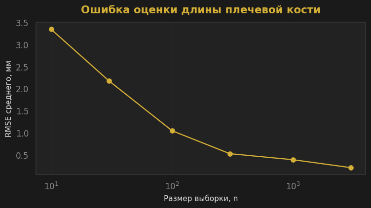
Вычисление разных статистик длин плечевых костей в выборке с возвращением#
Количество: 50
Среднее, мм: 154.21
Медиана, мм: 153.07
Минимум, мм: 128.74
Максимум, мм: 181.37
Стандартное отклонение, мм: 11.78
Первый квартиль, мм: 145.11
Третий квартиль, мм: 161.20
95-й перцентиль, мм: 176.48
Вычисление разных статистик длин плечевых костей в выборке без возвращения#
Количество: 50
Среднее, мм: 151.67
Медиана, мм: 152.25
Минимум, мм: 134.94
Максимум, мм: 187.77
Стандартное отклонение, мм: 10.05
Первый квартиль, мм: 144.88
Третий квартиль, мм: 156.19
95-й перцентиль, мм: 168.68
Вычисление разных статистик длин плечевых костей в выборке самцов#
Количество: 42
Среднее, мм: 166.36
Медиана, мм: 165.56
Минимум, мм: 154.73
Максимум, мм: 187.77
Стандартное отклонение, мм: 7.62
Первый квартиль, мм: 161.06
Третий квартиль, мм: 170.49
95-й перцентиль, мм: 181.14
Вычисление разных статистик длин плечевых костей в выборке самок#
Количество: 92
Среднее, мм: 147.31
Медиана, мм: 147.61
Минимум, мм: 128.74
Максимум, мм: 159.84
Стандартное отклонение, мм: 6.53
Первый квартиль, мм: 143.08
Третий квартиль, мм: 152.39
95-й перцентиль, мм: 157.67
Сравнение средних генеральной совокупности, выборки с и без возвращения#
Среднее генеральной совокупности, мм: 153.28
Среднее выборки с возвращением, мм: 154.21
Среднее выборки без возвращения, мм: 151.67
Ошибка среднего с возвращением, %: 0.60
Ошибка среднего без возвращения, %: 1.05
Сравнение средней длины плечевой кости самок и самцов#
Среднее всей совокупности, мм: 153.28
Среднее самцов, мм: 166.36
Среднее самок, мм: 147.31
Разность средних «самцы − самки», мм: 19.04
Средняя длина плечевых костей самцов выше средней длины плечевых костей самок на 12.93%
Random Variable Femural Length
Description (природа события)#
Случайная величина (Z) - длина бедренной кости животного в выбранной строке с единицей измерения [мм]. Только после выбора строки можно узнать длину бедренной кости, то есть величина заранее не известна. Но каждой конкретной строке соответствует одна длина. Это соответствует определению случайной величины у Н.Ш.Кремера (стр.89-90). До случайного выбора животного неизвестно, какое значение примет (W).
EDA & Distribution#
Была построена гистограмма распределения длин бедренных костей животных.#
Распределение в исходной гистограмме длин бедренных костей животных визуально не является нормальным, поэтому длины были прологарифмированы (взят десятичный логарифм). Распределение на логарифмируемом графике визуально не похоже на нормальное. Сделано предположение, что это распределение Фишера.
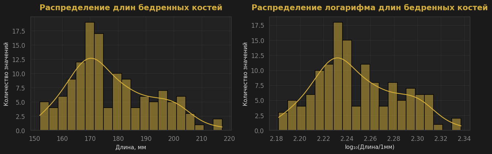
Подтвержение распределения длин бедренных костей по Фишеру с помощью Q-Q-графика.
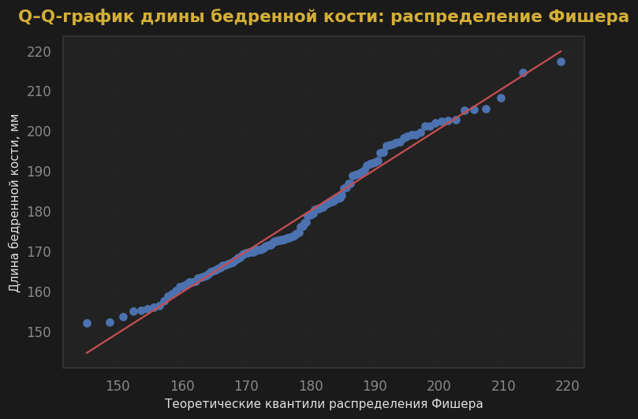
Создание таблицы: какая длина бедренной кости и сколько раз встретилась, доли этих масс, вероятность события P(W <= w) и проверка.#
Количество длин бедренных костей: 134
Количество уникальных длин бедренных костей: 131
Сумма относительных частот: 1.0
| f_length_mm | count | p_i | P | |
|---|---|---|---|---|
| 0 | 151.99 | 1 | 0.007463 | 0.007463 |
| 1 | 152.24 | 1 | 0.007463 | 0.014925 |
| 2 | 153.60 | 1 | 0.007463 | 0.022388 |
| 3 | 154.97 | 1 | 0.007463 | 0.029851 |
| 4 | 155.23 | 1 | 0.007463 | 0.037313 |
| ... | ... | ... | ... | ... |
| 126 | 205.35 | 1 | 0.007463 | 0.970149 |
| 127 | 205.46 | 1 | 0.007463 | 0.977612 |
| 128 | 208.16 | 1 | 0.007463 | 0.985075 |
| 129 | 214.48 | 1 | 0.007463 | 0.992537 |
| 130 | 217.33 | 1 | 0.007463 | 1.000000 |
131 rows × 4 columns
Построение графиков функции распределения длины бедренных костей#
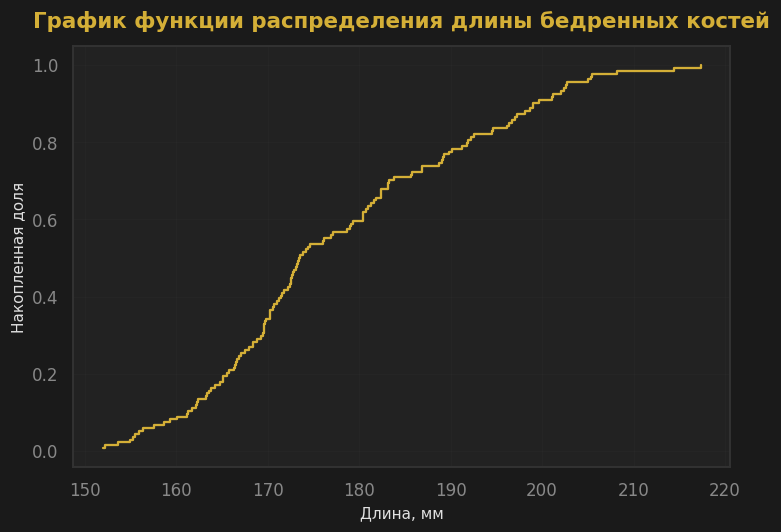
Вычисление разных статистик длин бедренных костей (математического ожидания, среднего, дисперсии, стандратного отклонения, моды и тд)#
Мат. ожидание по таблице частот, мм: 177.78
Сумма длин бедренных костей, мм: 23822.72
Средняя длина бедренных костей, мм: 177.78
Медиана длин бедренных костей, мм: 173.51
Минимальная длина бедренных костей, мм: 151.99
Максимальная длина бедренных костей, мм: 217.33
Cтандартное отклонение, мм: 14.50
Первый квартиль (25%), мм: 167.23
Третий квартиль (75%), мм: 188.97
95-й перцентиль, мм: 202.63
Дисперсия, мм²: 210.28
Стандартное отклонение, мм: 14.50
Мода, мм: [168.4, 180.45, 198.98]
Число повторений каждой моды: 2
Independence & Estimations#
Средняя длина бедренной кости в генеральной совокупности составляет 177.78 мм. В выборке с возвращением она равна 178.24 мм — завышение на 0.26%, а без возвращения — 175.43 мм, занижение на 1.32%. Медиана в выборке без возвращения (172.93 мм) была ближе к медиане и генеральной выборки (173.51 мм), чем медиана с возвращением (175.55 мм). Стандартное отклонение с возвращением (15.30 мм) было ближе к стандартному отклонению генеральной выборки (14.50 мм), чем стандартное отклонение без возвращения (13.54 мм).
Длина плечевых костей зависит от пола: кости самцов длинее самок на 26.02 мм или на 15.34%.
Состоятельность оценки#
Ошибка оценки среднего от размера выборки#
Вычисление разных статистик длин бедренных костей в выборке с возвращением#
Вычисление разных статистик длин бедренных костей в выборке без возвращения#
Вычисление разных статистик длин бедренных костей в выборке самцов#
Вычисление разных статистик длин бедренных костей в выборке самок#
Сравнение средних генеральной совокупности, выборки с и без возвращения#
Сравнение средней длины бедренной кости самок и самцов#
Выделение зависимостей
Масса и длина тела#
Масса тела и длина плечевой кости#
Масса тела и длина бедренной кости#
Длина тела и длина плечевой кости#
Длина тела и длина бедренной кости#
Длина плечевой и длина бедренной костей#
Масса тела и доля китайского происхождения#
Длина тела и доля китайского происхождения#
Длина плечевой кости и доля китайского происхождения#
Длина бедренной кости и доля китайского происхождения#
Проверка зависимости#
Если две случайные величины независимы, вероятность совместного выполнения двух условий равна произведению вероятностей каждого условия.
Нормализация. Диаграмма размаха#
На диаграмме размаха представлены масса тела, длина тела и длины плечевой и бедренной костей после min–max-нормализации. Каждая величина приведена к диапазону [0;1], что позволяет сопоставить положение медиан и межквартильные размахи относительно собственного диапазона величины.
Прямоугольники показывают межквартильный диапазон, линия внутри показывают медиану.
Медианы всех четырёх величин расположены ниже середины диапазона.
Lab resume
Было выявлено, что распределение массы тела похоже на логнормальное. Средняя масса и медиана в выборке с возвращением были ближе к генеральной совокупности, чем без возвращения, но стандартное отклонение в выборке без возвращения было ближе к генеральной совокупности, чем с возвращением.
Было выявлено, что распределение длины тела похоже на распределение Фишера. Средняя длина тела, медиана и стандартное отклонение в выборке с возвращением были ближе к генеральной совокупности, чем без возвращения.
Было выявлено, что распределение длины плечевой кости похоже на распределение Фишера. Средняя длина плечевой кости, медиана и стандартное отклонение в выборке с возвращением были ближе к генеральной совокупности, чем без возвращения.
Было выявлено, что распределение длины бедренной кости похоже на распределение Фишера. Средняя длина бедренной кости, медиана и стандартное отклонение в выборке с возвращением были ближе к генеральной совокупности, чем без возвращения.
Было выявлено, что все величины (масса тела, длина тела, длина плечевой кости, длина бедренной кости) попарно зависимы.
Было выявлено, что все 4 величины зависят и от пола (у самцов больше средние значения всех 4х величин), и от доли китайского происхождения: самый яркий пример: на диаграмме видно, что масса тела уменьшается с ростом доли китайского происхождения.